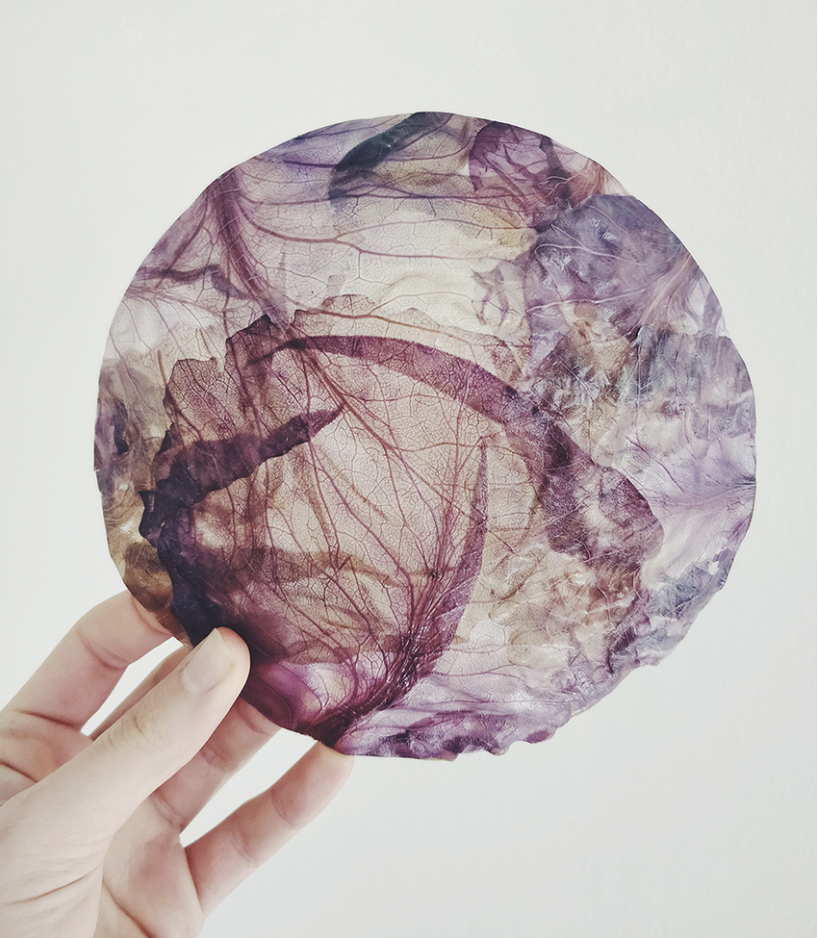
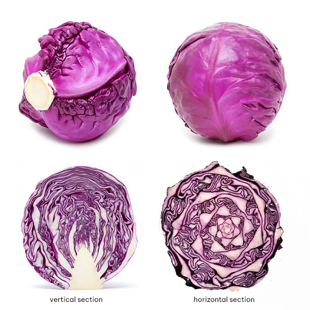

remixing materials¶
track: application
material narratives exercise¶
choose 1 material around, 1 material from references and one ideal/fictional material and do the following:
- properties (functional, technical & emotional)
- describe what is it and their aspect/aesthetic (add photo to documentation)
- what is the story behind them (who did them, why, where it comes from)
- 2 possible applications for each
cotton - around me¶
Cotton is a soft, fluffy staple fiber that grows in a boll, or protective case, around the seeds of the cotton plants of the genus Gossypium in the mallow family Malvaceae. The fiber is almost pure cellulose. under natural conditions, the cotton bolls will increase the dispersal of the seeds.
It comes from a plant native to tropical regions around the world, including the Americas, Africa, Egypt and India. Cotton was independently domesticated in the Old and New Worlds.
The fiber is most often spun into yarn or thread and used to make a soft, breathable, and durable textile. it is mainly used for textile products like underwear, socks and t-shirts, but also in fishnets, coffee filters, tents, book binding and archival paper.
@ The Biology of Gossypium hirsutum L. and Gossypium barbadense L. (cotton).
for me cotton is intimacy, closeness, security. it is a memory of home and childhood, when I was ‘being-taken-care-of’. As a person from a family with sensitive skin multiple skin intolerances, I was always being told that 100% cotton is the only safe choice when it comes to textiles. I haven’t inherited the cotton-mania to this extent but I definitely have some sort of attatchment to cotton.
There are already multiple applications of cotton as mentioned above. My future speculation would be that is becomes part of our nutrition, as its seed is protein-rich. Currently it cannot be digested by humans or animals other than cows but I can easily imagine this changing over the coming years with some scientific help..
Another interesting concept I came across is the use of cotton as a conductor.
The cotton fibers are covered with microscopic particles enabling them to conduct electricity. The applications of this are endless, but they have already used them to sense the heart rate of a person wearing the fabric, and created clothes that can power electronic devices, or even create color without dyes!
@ https://newatlas.com/future-of-cotton/17077/
red cabbage - from the references¶

Most of the red cabbage varieties grown in the United States originated in Germany and the Low Countries. “Red” cabbage (magenta to purplish) was first described in England in 1570, all of the early varieties being round-headed.
@ https://aggie-horticulture.tamu.edu/archives/parsons/publications/vegetabletravelers/cabbage.html
Red cabbage as a vegetable is one of my favorites. As a person who hardly ever cooks, I really appreciate the ease of eating it raw (or cooked) and its relatively high nutrition value. Another fascinating part is its inner shapes. It has an amazing variety of red and purple tones and when being cut in sections, beautiful patterns appear. Depending on the cut (horizontal, vertical, random), it tells a different story. It is essentially a leaf-overlay with various thicknesses on its body. empties - solids, hards - softs. As a human, I can read on it mathematic structures, tree diagrams, neural networks, or free handrawings.

Another interesting aspect is that it changes its color according to the pH value of the soil due to a pigment belonging to anthocyanins. In acidic soils, the leaves grow more reddish; in neutral soils, they will grow more purple, while an alkaline soil will produce rather greenish-yellow colored cabbages. This explains the fact that the same plant is known by different colors in various regions.
A personally experienced use of red cabbage juice is a pH indicator, as it turns red in acid and green/yellow in basic solutions. Within the “bio & agri zero” seminar of the first term we experimented with the red cabbage and made our diy ph paper!

Interestingly, when I picked this material from the list of references presented in class, I didn’t know that the referred material was red cabbage. The image of this translucent membrane with its vein-like patterns attracted me and only after doing some research did I discover that the original material behind it. Apparently, the studio nir meiri processed the cabbage leaves and launched their lighting collection “veggie lights” during london design festival 2019. the lamp collection was made out of thin layers of red cabbage with the materials developed by vaidehi thakkar called ‘fiber flats’.
Its strongly communicative and information-rich surface can be used in art or in wearables, depending on the process it goes through. Besides the material itself, i imagine it being used as a reference to other kinds of creations.
hyperskin - an ideal story (in the making)¶
my hyperskin companion has always been with me. i cant remember the first time i saw it, but i have seen it changing and growing with me through time. when im cold, it wraps around me like a blanket. thick, soft and heavy. other times it is rough and rigid, more like an impenetrable shield. when i travel and its warm, it shrinks so much that i can fit it inside my jeans pocket. sometimes i wonder it partly evaporates in the air. it always fits me, somehow it adapts its shape to my needs. when i’m hungry i can also eat a little bit of it, and with some good care it grows back it’s size. is also nourished by my body, my sweat, my breath, my energy. when i get sick it becomes strong and thick, and when it gets weak, it revives from my health. when i die, it remains as a carrier of my spirit to its next host. i don’t know it’s origin but i imagine it travels through non-linear time adapting to each epoque… to be continued